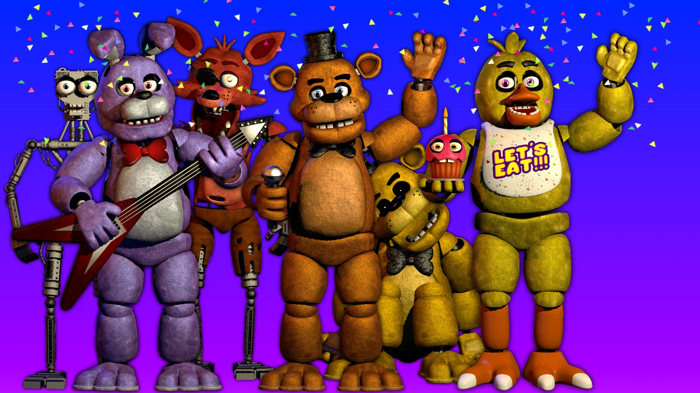

Сможете ли вы продержаться одну ночь в Freddy's?

Five Nights at Freddy's - это игра-ужастик от первого лица, в которой игроки устраиваются на работу
в знаменитую семейную пиццерию Freddy's, где дружелюбные роботы развлекают детей во время еды.
Проблема в том, что ночью роботы ведут себя несколько странно.
Ваша задача - следить за Фредди и его друзьями всю ночь с помощью камер наблюдения.
Конечно, из-за проблем с бюджетом каждую ночь можно использовать только определенное количество
электричества, и, если оно закончится... что ж, вы окажетесь во власти Фредди.
Управление в Five Nights at Freddy's очень простое. Вы можете в любой момент закрыть защитные
двери, чтобы защитить себя, но это будет потреблять много электроэнергии. Таким же образом, вы
можете направить камеру наблюдения, куда захотите, но это также потребляет электроэнергию,
хотя и не так много.
Five Nights at Freddy's - это пугающая игра, которая, несмотря на свою довольно необычную основу,
способна заставить не раз испытать испуг.
Тем не менее, в этой бесплатной версии вы можете играть только две ночи.
Но поверьте нам - этого более чем достаточно, чтобы натерпеться страхов.
Требуется Android 2.0 или более новая версия
Настоящий возраст Фредди и других персонажей Five Nights at Freddy's неизвествен.
По сюжету пиццерия Fredbear's Family Diner открылась до 1983 года.
Самый сильный аниматроник в Five Nights at Freddy's – Золотой Фредди.
Этот бестелесный персонаж обладает бесчисленными способностями, которые
делают его практически непобедимым. Он может телепортироваться, создавать
иллюзии или исчезать в любой момент.
В данный момент Five Nights at Freddy's не бесплатна, но вы можете насладиться
демо-версией, скачав для этого APK Five Nights at Freddy's с Uptodown.
В бесплатной версии можно играть две полных ночи.
В общей сложности Five Nights at Freddy's занимает 50 Мб.
Этот малый размер файла связан с тем, что это демо-версия игры, а не полная версия.